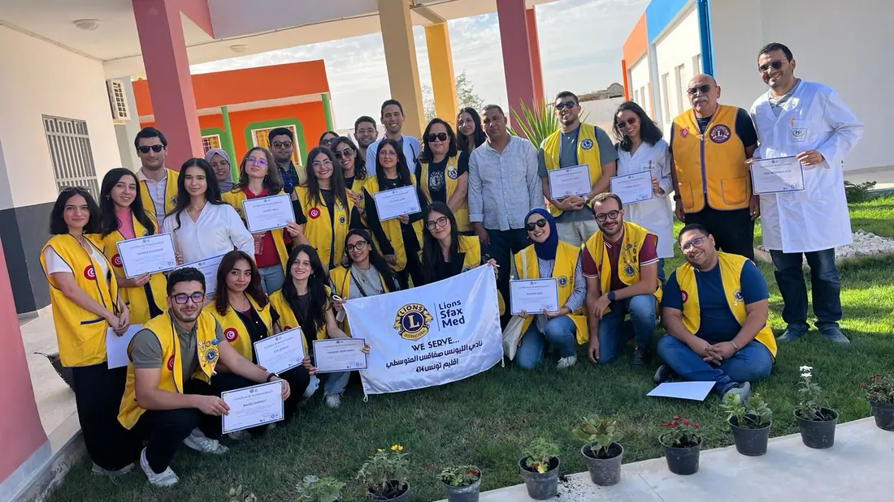

Servir, ensemble.
Nous appartenons à Lions International, un mouvement de service qui relie des clubs engagés autour de causes communes et d’actions concrètes.
Découvrir Lions InternationalAncrés à Sfax, unis par une même volonté : servir.
Le Lions Club Sfax-Méditerranée rassemble des femmes et des hommes unis par une même volonté : servir.
Basé à Sfax, en Tunisie, notre club s’inscrit dans le mouvement Lions et agit en fonction des besoins, à travers des initiatives de proximité et des actions de solidarité.
Le Lions Club Sfax-Méditerranée est un club Lions basé à Sfax, en Tunisie, rattaché au District 414 Tunisie. Ses quatre axes prioritaires sont le diabète, l'environnement, l'humanitaire et la jeunesse.

Nous appartenons à Lions International, un mouvement de service qui relie des clubs engagés autour de causes communes et d’actions concrètes.
Découvrir Lions InternationalNotre club est rattaché au District 414 Tunisie.
La présentation institutionnelle détaillée sera ajoutée après validation du club.
L’histoire officielle du Lions Club Sfax-Méditerranée sera retracée à partir des archives, documents de charte et témoignages validés par le club.
Cet espace est préparé pour accueillir une chronologie fondée sur des événements validés.
Répondre avec attention aux besoins qui se présentent.
Viser une action utile, préparée et responsable.
Accueillir les parcours et les regards qui enrichissent notre collectif.
Agir avec nos membres, nos partenaires et les communautés.
Faire vivre la confiance dans nos choix et nos engagements.
Rester à l’écoute de nouvelles façons de mieux servir.
Quatre engagements qui guident notre action, sans limiter les réponses que les besoins appellent.
Prévention, sensibilisation et dépistage.
Préservation et engagement citoyen.
Solidarité et soutien selon les besoins.
Leadership, développement et engagement.
La composition du bureau et l’Année Lions du mandat seront publiées après validation par notre club.
Maquette : les emplacements ci-dessous n’identifient aucune personne.
Les Années Lions, fonctions et titulaires seront renseignés à partir des archives institutionnelles.